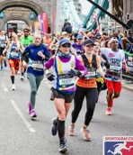
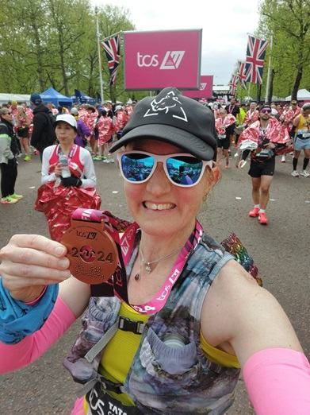
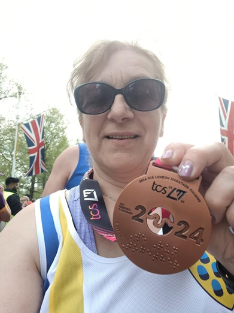
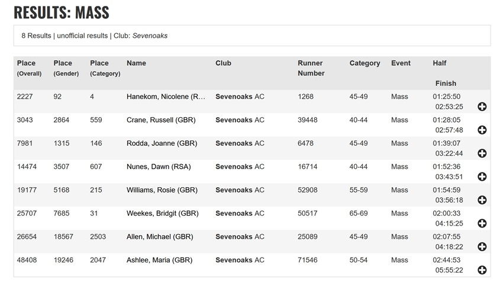

Eight SAC runners tackled this year's London Marathon, with some brilliant results:

Of particular note of course is Nicolene's 4th W45-49 category place, a club record by over half an hour. Also Russell's first sub 3 hour run at London and Bridgit's 31st place in her age group despite hamstring problems. Also, Dawn, Jo and Rosie look likely to have also earned GFA qualifying times for next year. Members can look out for all the stories in the forthcoming Update number 184 expected during the week beginning 29 April.
Full results are here.